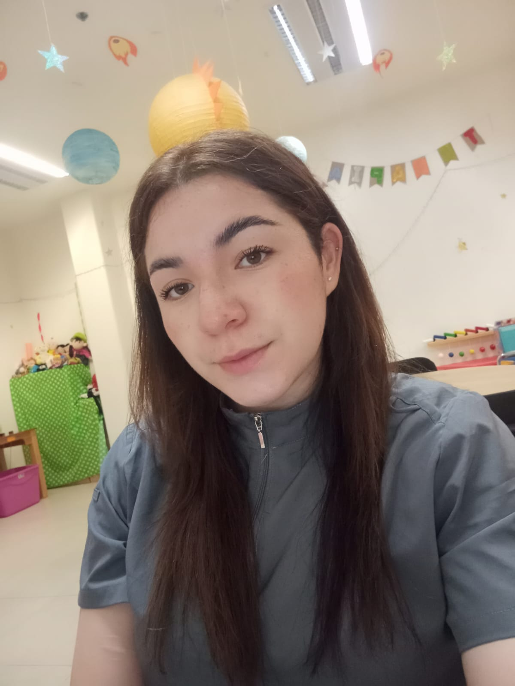
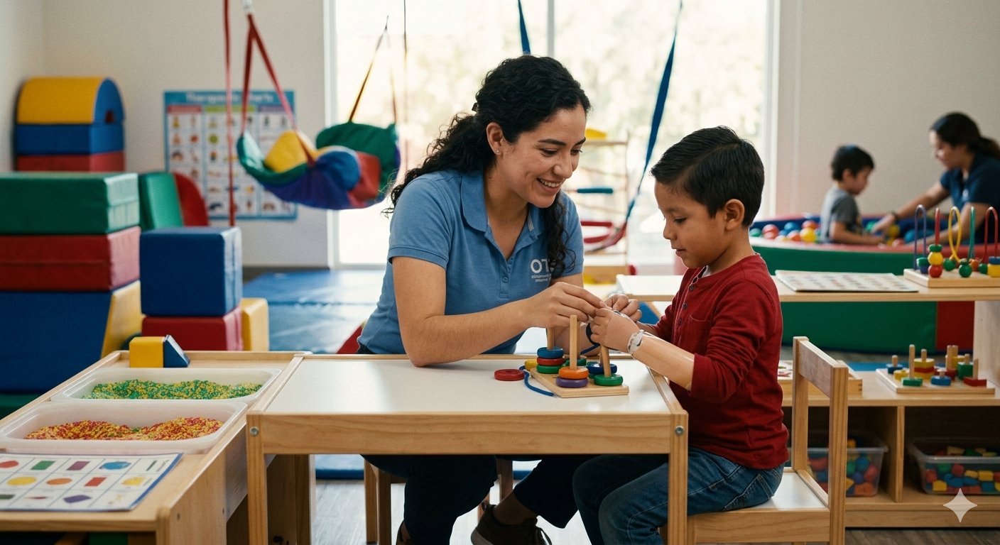
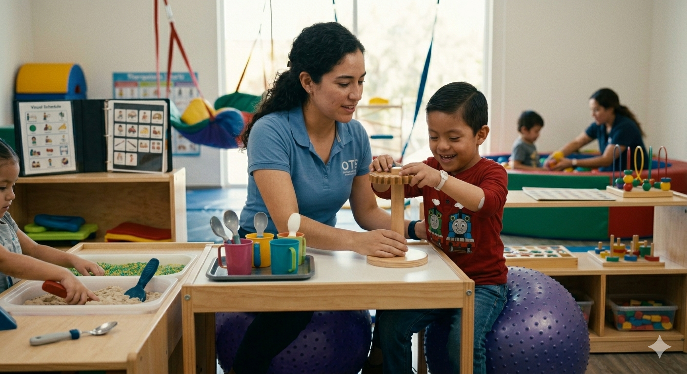

Acompañamiento profesional y cercano para mejorar su conducta, adaptación y desarrollo integral.

Soy Graciela Contreras, terapeuta ocupacional enfocada en el desarrollo, la independencia y el bienestar de cada persona desde un enfoque humano, empático y personalizado.
Trabajo con población infantil y adulta, aplicando intervenciones basadas en evidencia que permiten mejorar la calidad de vida y la participación en actividades cotidianas.
Mi objetivo es acompañar cada proceso de forma cercana, potenciando habilidades y construyendo caminos hacia una vida más independiente y significativa.
Muchos niños presentan dificultades que impactan su día a día. A través de terapia ocupacional, trabajamos en soluciones personalizadas para mejorar su desarrollo y bienestar.
Si tu hijo se sobreestimula con ruidos, texturas o movimientos, trabajamos en regular su respuesta para mejorar su conducta y atención.
Cuando comer se vuelve un reto, implementamos estrategias para ampliar su alimentación y mejorar su relación con la comida.
Diseñadas para proteger, alinear y mejorar la funcionalidad en cada caso específico.
Ajustamos el entorno y las actividades para facilitar su participación en la vida diaria.
Enfocada en recuperar habilidades y fomentar independencia en actividades cotidianas.
Cada proceso es único. Trabajo con niños, adolescentes y adultos que presentan diferentes necesidades, adaptando cada intervención a su desarrollo, etapa de vida y contexto.


Cada proceso es personalizado, pero seguimos una estructura clara para lograr avances reales y medibles.
Evaluamos habilidades, necesidades y áreas de oportunidad para comprender el caso de forma integral.
Diseñamos un programa adaptado a los objetivos específicos de cada paciente.
Sesiones enfocadas en desarrollar habilidades y mejorar su funcionalidad en la vida diaria.
Monitoreamos avances y ajustamos el plan para asegurar resultados reales.
Cada proceso está lleno de pequeños avances que construyen grandes cambios.
📍 Atención a domicilio en Zinacantepec, Toluca y Metepec
🕒 Lunes a viernes: 17:00 – 20:00 hrs
🕒 Fines de semana: 8:00 – 14:00 hrs (previa cita)
Respuesta rápida por WhatsApp